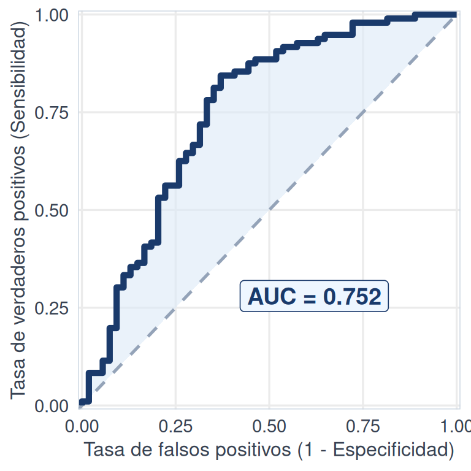
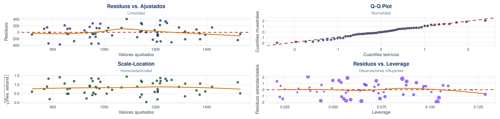
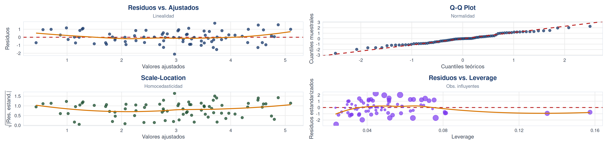
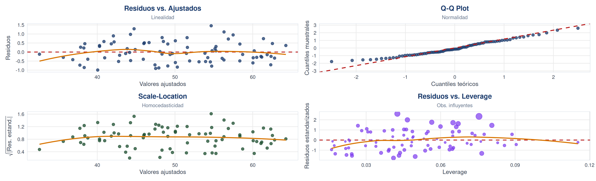

Bioestadística, Zootecnia
Departamento de Estadística, Sede Bogotá
Clase 17
Contenido
Parte I: Modelo de Regresión Multiple
- Introducción.
- Comparación Modelo Simple vs Multiple.
- Modelo de regresión múltiple.
- Tipos de variables.
- Estimación por MCO.
- Interpretación de los coeficientes.
Parte II: Inferencia y diagnóstico
- Bondad de ajuste y prueba F.
- Pruebas t para coeficientes.
- Supuestos y diagnóstico de residuos.
- Multicolinealidad.
- Interacciones entre variables.
- Criterios de selección de variables.
- Predicción y validación.
Parte III: Aplicaciones y Ejemplos
- Ejemplo con variables cuantitativas.
- Ejemplo con variables mixtas.
- Introducción a la regresión logística.
- Taller en clase.
PARTE I
Modelo de Regresión Lineal Multiple
Introducción a la regresión multiple │ Comparación Modelo Simple vs Multiple │ Modelo de regresión múltiple. │ Tipos de variables. │ Estimación por MCO. │ Interpretación de los coeficientes │
Introducción a la regresión lineal múltiple
¿Qué es?
- La regresión lineal múltiple modela la relación entre una variable respuesta \(Y\) y dos o más variables explicativas \(X_1, X_2, \ldots, X_k\).
- Permite estimar el efecto individual de cada predictor controlando por los demás factores.
- Es una de las herramientas más utilizadas en la investigación científica para analizar datos observacionales y experimentales.
Áreas de aplicación
- Zootecnia: productividad de lotes según suplementación, alimentación, densidad y dieta.
- Salud pública: factores de riesgo asociados a enfermedades crónicas.
- Ecología: biodiversidad en función de variables ambientales y de hábitat.
- Ingeniería: calidad de producto según parámetros de proceso.
- Economía: modelos de demanda, producción y precios pecuarios.
¿Cuándo usar regresión lineal múltiple?
Se aplica cuando…
- Se sospecha que más de un factor influye sobre la variable respuesta. Por ejemplo, el productividad de un lote no depende solo del suplemento, sino también de la alimentación, el tipo de dieta y la temperatura.
- Se desea separar el efecto de cada variable explicativa sobre \(Y\), manteniendo las demás constantes. Esto es fundamental cuando los predictores están correlacionados entre sí.
- Se necesita controlar variables confusoras que podrían sesgar la relación aparente entre un predictor y la respuesta si no se incluyen en el modelo.
Condiciones necesarias
- La variable respuesta \(Y\) debe ser cuantitativa continua (peso, productividad, concentración, altura).
- La relación entre \(Y\) y los predictores debe ser aproximadamente lineal en los parámetros.
- Se dispone de una muestra con suficientes observaciones relativas al número de predictores (regla práctica: al menos 10–15 observaciones por predictor).
- Los predictores no deben ser redundantes entre sí (ausencia de colinealidad perfecta).
¿Qué preguntas responde el modelo?
Preguntas que podemos abordar
- ¿Cuánto aumenta el productividad por cada kg adicional de proteína aplicado, si la precipitación y la contenido proteico permanecen constantes?
- ¿La precipitación tiene un efecto significativo sobre el productividad una vez que se controla por la suplementación?
- ¿Cuál de los predictores tiene el mayor impacto relativo sobre la respuesta?
- ¿El modelo en conjunto explica una proporción significativa de la variabilidad observada en \(Y\)?
Ejemplo en zootecnia
- Un investigador mide en 80 corrales: ganancia de peso bovina (kg/animal), suplemento nitrogenado (kg/animal), precipitación acumulada (mm) y contenido proteico de la dieta (%).
- Objetivo: determinar cuáles factores influyen significativamente y cuantificar su efecto individual.
- ¿Por qué no regresión simple? Porque analizar cada predictor por separado ignora que los efectos se mezclan si no se controlan mutuamente.
Regresión simple vs. regresión múltiple
Regresión lineal simple
- Modelo: \(\small Y = \beta_0 + \beta_1 X + \varepsilon\)
- Un solo predictor \(X\) explica la variabilidad de \(\small Y\).
- Geométricamente: una recta en el plano \(\small \mathbb{R}^2\).
- \(\small \beta_1\) mide el cambio promedio en \(\small Y\) por unidad de \(\small X\), sin controlar otros factores.
- Útil cuando el fenómeno depende principalmente de una sola variable o como análisis exploratorio inicial.
Regresión lineal múltiple
- Modelo: \(\small Y = \beta_0 + \beta_1 X_1 + \beta_2 X_2 + \cdots + \beta_k X_k + \varepsilon\)
- Varios predictores \(\small X_1, X_2, \ldots, X_k\) explican conjuntamente a \(\small Y\).
- Geométricamente: un hiperplano en \(\small \mathbb{R}^{k+1}\).
- Cada \(\small \beta_i\) mide el efecto de \(\small X_i\) controlando por las demás variables.
- Permite modelar fenómenos complejos donde múltiples factores actúan simultáneamente.
Idea clave: la regresión múltiple no es simplemente “más variables”; cambia la interpretación de cada coeficiente porque ahora cada \(\small \beta_i\) está ajustado por la presencia de los demás predictores.
Modelo de regresión múltiple
El modelo de regresión lineal múltiple expresa la variable respuesta \(\small Y\) como una combinación lineal de \(\small k\) predictores más un término de error:
\(Y = \beta_0 + \beta_1 X_1 + \beta_2 X_2 + \cdots + \beta_k X_k + \varepsilon\)
Componentes
- \(\small Y\): variable respuesta. Lo que queremos explicar (ej: productividad en kg/animal).
- \(\small X_1, X_2, \ldots, X_k\): variables explicativas o predictores (ej: suplemento, precipitación, contenido proteico).
- \(\small \varepsilon\): error aleatorio. Representa la variabilidad no explicada por los predictores.
Parámetros
- \(\small \beta_0\): intercepto. Valor esperado de \(Y\) cuando todos los predictores valen cero.
- \(\small \beta_1, \beta_2, \ldots, \beta_k\): coeficientes de regresión. Cada \(\small \beta_i\) mide el cambio promedio en \(\small Y\) por unidad de \(\small X_i\), manteniendo los demás predictores constantes.
- Los parámetros son desconocidos y se estiman a partir de los datos observados mediante mínimos cuadrados.
Representación matricial del modelo
El modelo de regresión múltiple \(\mathbf{Y} = \mathbf{X}\boldsymbol{\beta} + \boldsymbol{\varepsilon}\) se puede descomponer matricialmente como:
\[\underbrace{\begin{pmatrix} Y_1 \\ Y_2 \\ \vdots \\ Y_n \end{pmatrix}}_{\mathbf{Y}} \;=\; \underbrace{\begin{pmatrix} 1 & X_{11} & X_{12} & \cdots & X_{1k} \\ 1 & X_{21} & X_{22} & \cdots & X_{2k} \\ \vdots & \vdots & \vdots & \ddots & \vdots \\ 1 & X_{n1} & X_{n2} & \cdots & X_{nk} \end{pmatrix}}_{\mathbf{X}} \;\underbrace{\begin{pmatrix} \beta_0 \\ \beta_1 \\ \vdots \\ \beta_k \end{pmatrix}}_{\boldsymbol{\beta}} \;+\; \underbrace{\begin{pmatrix} \varepsilon_1 \\ \varepsilon_2 \\ \vdots \\ \varepsilon_n \end{pmatrix}}_{\boldsymbol{\varepsilon}}\]
Lectura de la expresión
- Cada fila de \(\mathbf{X}\) contiene los valores de los \(k\) predictores para una observación.
- La primera columna de \(\mathbf{X}\) es de unos: esto genera el intercepto \(\beta_0\) en el producto.
- El producto \(\mathbf{X}\boldsymbol{\beta}\) da el vector de valores predichos \(\hat{\mathbf{Y}}\) para todas las observaciones.
- El vector \(\boldsymbol{\varepsilon}\) captura lo que el modelo no logra explicar.
¿Por qué esta notación?
- Resume las \(n\) ecuaciones individuales en una sola expresión compacta y elegante.
- Facilita obtener la solución analítica por MCO: \(\hat{\boldsymbol{\beta}} = (\mathbf{X}^\top\mathbf{X})^{-1}\mathbf{X}^\top\mathbf{Y}\)
-
Es exactamente lo que R resuelve internamente con la función
lm().
Tipos de modelos según las variables
El modelo de regresión múltiple es flexible: puede incorporar diferentes tipos de variables explicativas y respuesta.
Según los predictores
- Todas cuantitativas: el caso clásico. Ej: predecir productividad a partir de suplemento (kg/animal), consumo de alimento (kg) y temperatura (°C).
- Mixto (cuantitativas + cualitativas): se incluyen variables categóricas mediante variables indicadoras (dummy). Ej: tipo de dieta (arcilloso, arenoso) junto con dosis de alimentación.
- Las variables dummy toman valores 0 o 1 y permiten comparar categorías dentro del mismo modelo lineal.
Según la variable respuesta
- \(Y\) cuantitativa continua: regresión lineal múltiple clásica (lo que estamos estudiando).
- \(Y\) binaria (0/1): se requiere regresión logística. Ej: ¿el animal sobrevive o no? ¿el dieta está contaminado o no?
- La regresión logística modela la probabilidad de que ocurra un evento, no un valor continuo.
- Más adelante haremos una introducción a este tipo de regresión.
Estimación por mínimos cuadrados ordinarios
El método de Mínimos Cuadrados Ordinarios (MCO) busca los valores de \(\boldsymbol{\beta}\) que hacen que las predicciones del modelo estén lo más cerca posible de los valores observados, minimizando la suma de los errores al cuadrado:
\(S(\boldsymbol{\beta}) = \sum_{i=1}^{n} (Y_i - \hat{Y}_i)^2 = \|\mathbf{Y} - \mathbf{X}\boldsymbol{\beta}\|^2\)
Solución analítica
- Se derivan las ecuaciones normales igualando las derivadas parciales a cero.
- La solución en forma matricial es:
\(\hat{\boldsymbol{\beta}} = (\mathbf{X}^\top\mathbf{X})^{-1}\mathbf{X}^\top\mathbf{Y}\)
- Esta solución es única siempre que \(\mathbf{X}^\top\mathbf{X}\) sea invertible (no haya colinealidad perfecta).
¿Qué obtenemos?
- Valores ajustados: \(\hat{\mathbf{Y}} = \mathbf{X}\hat{\boldsymbol{\beta}}\), las predicciones del modelo.
- Residuos: \(\mathbf{e} = \mathbf{Y} - \hat{\mathbf{Y}}\), la diferencia entre lo observado y lo predicho.
- Los residuos son clave para evaluar la calidad del ajuste y verificar los supuestos del modelo.
Interpretación de los coeficientes
En regresión múltiple, cada coeficiente \(\small \beta_i\) mide el efecto parcial de \(\small X_i\) sobre \(\small Y\): el cambio promedio en \(Y\) cuando \(\small X_i\) aumenta una unidad, manteniendo todos los demás predictores constantes.
\(\hat{Y} = 1200 + 2.5\,X_1 + 0.8\,X_2 + 180\,X_3\)
- \(\small \hat{\beta}_1 = 2.5\): por cada kg/animal adicional de suplemento, el productividad aumenta en promedio 2.5 kg/animal, si precipitación y contenido proteico no cambian.
- \(\small \hat{\beta}_2 = 0.8\): por cada mm adicional de precipitación, el productividad sube 0.8 kg/animal, manteniendo las demás variables constantes.
- \(\small \hat{\beta}_3 = 180\): por cada unidad porcentual adicional de contenido proteico, el productividad aumenta 180 kg/animal, manteniendo las demás variables constantes.
- Intercepto (\(\small \hat{\beta}_0\)): valor esperado de \(\small Y\) cuando todos los predictores son cero. Solo tiene sentido si el origen está en la zona de observación.
- Coeficiente ajustado ≠ marginal: el valor de \(\small \beta_i\) cambia si se agregan o quitan predictores del modelo.
- Magnitud no es importancia: los coeficientes dependen de las unidades; no se pueden comparar directamente entre predictores con escalas distintas.
- Correlación ≠ causalidad: un coeficiente significativo no implica que \(\small X_i\) cause cambios en \(\small Y\).
PARTE II
Inferencia y Diagnóstico
Bondad de ajuste y prueba F │ Pruebas t para coeficientes │ Supuestos y diagnóstico de residuos │ Multicolinealidad │ Interacciones entre variables │ Selección de variables │ Predicción y validación │
Bondad de ajuste: \(\small R^2\) y \(\small R^2\) ajustado
¿Qué tan bien ajusta el modelo?
Una vez estimado el modelo, necesitamos medir qué proporción de la variabilidad de \(Y\) logra explicar. Para esto usamos el coeficiente de determinación \(\small R^2\) y su versión ajustada \(\small R^2_{adj}\).
\(R^2\) (R cuadrado)
\(R^2 = 1 - \dfrac{SCR}{SCT} = \dfrac{SCE}{SCT}\)
- Mide la proporción de la variabilidad total de \(Y\) que es explicada por el modelo. Va de 0 a 1.
- Problema: siempre aumenta al agregar más predictores, aunque no aporten información real.
- Poco confiable para comparar modelos con diferente número de variables.
\(R^2_{adj}\) (R cuadrado ajustado)
\(R^2_{adj} = 1 - \dfrac{SCR/(n-k-1)}{SCT/(n-1)}\)
- Penaliza predictores que no mejoran el modelo: si una variable no aporta, el \(R^2_{adj}\) puede disminuir.
- Tiene en cuenta el número de predictores (\(k\)) y el tamaño de muestra (\(n\)), corrigiendo la sobreestimación del \(R^2\).
- Permite comparar modelos con diferente número de variables de forma justa.
Prueba F global: ¿el modelo sirve?
¿Por qué necesitamos esta prueba?
Antes de interpretar coeficientes individuales, debemos responder una pregunta fundamental: ¿el conjunto de predictores explica algo de la variabilidad de \(\small Y\), o el modelo no aporta más que usar simplemente el promedio \(\small \bar{Y}\)?
Hipótesis
- \(\small H_0\): \(\small \beta_1 = \beta_2 = \cdots = \beta_k = 0\)
- Ningún predictor tiene efecto sobre \(Y\). El modelo no aporta información.
- \(\small H_1\): al menos un \(\small \beta_i \neq 0\)
- Al menos uno de los predictores contribuye a explicar la variabilidad de \(\small Y\).
Descomposición de la variabilidad
- SCT (Suma de Cuadrados Total): variabilidad total de \(\small Y\) respecto a su media.
- SCE (Suma de Cuadrados Explicada): variabilidad que el modelo logra capturar.
- SCR (Suma de Cuadrados Residual): variabilidad que el modelo no explica.
- Relación: \(\small SCT = SCE + SCR\)
Prueba F global
Estadístico de prueba
Compara cuánta variabilidad explica el modelo (por predictor) frente a cuánta queda sin explicar (por observación):
\(F = \dfrac{SCE / k}{SCR / (n - k - 1)} = \dfrac{\text{Cuadrado Medio de Regresión}}{\text{Cuadrado Medio del Error}}\)
Bajo \(H_0\), este estadístico sigue una distribución \(\small F\) de Fisher con \(\small k\) y \(\small n-k-1\) grados de libertad.
¿Cómo decidimos?
- Si el valor-\(p < \alpha\) (generalmente 0.05), se rechaza \(H_0\): el modelo explica una parte significativa de la variabilidad.
- Si el valor-\(p \geq \alpha\), no se rechaza \(H_0\): no hay evidencia de que los predictores aporten al modelo.
Interpretación práctica
- Un \(F\) grande indica que el modelo explica mucho más de lo que deja sin explicar.
- Rechazar \(H_0\) no significa que todos los predictores sirvan, solo que al menos uno es útil.
- Para saber cuáles predictores son significativos, se necesitan las pruebas t individuales.
¿cuáles predictores importan?
La prueba F nos dice que al menos un predictor es útil, pero no cuál. Las pruebas t evalúan la significancia de cada coeficiente por separado, manteniendo los demás predictores en el modelo.
Hipótesis y estadístico
- \(H_0\): \(\beta_i = 0\) (el predictor \(X_i\) no aporta al modelo).
- \(H_1\): \(\beta_i \neq 0\) (el predictor \(X_i\) sí tiene efecto sobre \(Y\)).
\(t_i = \dfrac{\hat{\beta}_i}{\text{EE}(\hat{\beta}_i)}\)
- Bajo \(H_0\), sigue una distribución \(t\) de Student con \(n - k - 1\) grados de libertad.
¿Cómo se interpreta?
- Si el valor-\(p < \alpha\), se rechaza \(H_0\): el predictor es estadísticamente significativo.
- Si el valor-\(p \geq \alpha\), no se rechaza \(H_0\): no hay evidencia suficiente de que ese predictor aporte al modelo.
- Un predictor no significativo podría ser candidato a eliminarse del modelo.
-
En R, cada prueba t aparece en la tabla de coeficientes del
summary(modelo).
Intervalos de confianza para los coeficientes
Además del valor-\(p\), los intervalos de confianza ofrecen un rango plausible de valores para cada coeficiente. Son complementarios a las pruebas t y aportan más información sobre la magnitud del efecto.
Fórmula e interpretación
\(\hat{\beta}_i \pm t_{\alpha/2,\,n-k-1} \cdot \text{EE}(\hat{\beta}_i)\)
- Con un 95% de confianza, el verdadero valor de \(\beta_i\) se encuentra dentro de ese rango.
- Si el intervalo contiene el cero, el coeficiente no es significativo a ese nivel de confianza.
- Si el intervalo no contiene el cero, hay evidencia de que \(X_i\) tiene un efecto real sobre \(Y\).
¿Por qué reportarlos?
- El valor-\(p\) solo dice si el efecto es significativo o no. El intervalo dice cuánto podría valer el efecto.
- Un intervalo estrecho indica una estimación precisa; uno amplio indica incertidumbre.
- Siempre es buena práctica reportar tanto el valor-\(p\) como el intervalo de confianza.
-
En R se obtienen con
confint(modelo, level = 0.95).
¿cuándo podemos confiar en los resultados?
¿Por qué importan los supuestos?
Las pruebas F, t e intervalos de confianza que acabamos de ver son válidas solo si se cumplen ciertos supuestos sobre los errores del modelo. Si se violan, las conclusiones pueden ser incorrectas.
Supuestos sobre los errores
- Linealidad: la relación entre predictores y respuesta es lineal en los parámetros.
- Independencia: los errores \(\varepsilon_i\) no están correlacionados entre sí.
- Homocedasticidad: la varianza de los errores es constante: \(\text{Var}(\varepsilon_i) = \sigma^2\) para todo \(i\).
- Normalidad: \(\varepsilon_i \sim N(0, \sigma^2)\). Necesario para que las pruebas t y F sean exactas.
Supuesto sobre los predictores
- No multicolinealidad perfecta: ningún predictor puede ser combinación lineal exacta de otros.
- Si se viola, la matriz \(\small \mathbf{X}^\top\mathbf{X}\) no es invertible y no se puede calcular \(\small \hat{\boldsymbol{\beta}}\).
¿Qué pasa si se violan?
- Los estimadores pueden seguir siendo útiles, pero los errores estándar, pruebas e intervalos dejan de ser confiables.
¿Cómo verificamos los supuestos?
Los supuestos se verifican analizando los residuos \(\small e_i = Y_i - \hat{Y}_i\). En R, la función plot(modelo) genera 4 gráficos de diagnóstico que cubren los supuestos principales.
Gráficos clave
- Residuos vs. ajustados: verifica linealidad y homocedasticidad. Se espera una nube sin patrón.
- QQ-plot: verifica normalidad. Los puntos deben seguir la línea diagonal.
- Scale-Location: verifica homocedasticidad. La línea roja debe ser aproximadamente horizontal.
- Residuos vs. Leverage: detecta observaciones que influyen demasiado en el ajuste del modelo.
¿Qué buscar?
- Curvatura en residuos vs. ajustados → falta de linealidad. Considerar transformaciones o términos cuadráticos.
- Forma de embudo → heterocedasticidad. Los errores crecen con el valor predicho.
- Colas pesadas en el QQ-plot → los errores no son normales. Afecta las pruebas de inferencia.
- Puntos influyentes: una observación es influyente si al quitarla del modelo, los coeficientes cambian mucho. La distancia de Cook mide exactamente esto.
Multicolinealidad: ¿los predictores se repiten?
¿Qué es y por qué importa?
La multicolinealidad ocurre cuando dos o más predictores están altamente correlacionados entre sí. El modelo sigue prediciendo bien en conjunto, pero no puede distinguir el efecto individual de cada predictor, lo que infla los errores estándar y hace que las pruebas t pierdan poder.
¿Cómo detectarla?
-
Paso 1, Matriz de correlaciones: correlaciones altas (\(\small |r| > 0.7\)–\(0.8\)) son una primera señal. En R:
cor(datos[, predictores]). - Paso 2, VIF: \(\;\text{VIF}_i = \dfrac{1}{1 - R^2_i}\)
- \(R^2_i\): \(R^2\) de regresión de \(X_i\) contra los demás predictores.
- VIF = 1: sin correlación. VIF > 5: moderada. VIF > 10: problemática.
¿Qué hacer si existe?
- Eliminar uno de los predictores redundantes.
- Combinar variables correlacionadas en un índice o componente.
- No ignorarla: un predictor puede parecer no significativo solo por la multicolinealidad, no porque no tenga efecto real.
Síntoma típico: \(R^2\) alto y prueba F significativa, pero ninguna prueba t es significativa → los predictores explican \(Y\) en conjunto, pero no se puede separar el aporte individual de cada uno.
Interacciones entre variables
Una interacción ocurre cuando el efecto de un predictor \(\small X_1\) sobre \(\small Y\) depende del valor de otro predictor \(\small X_2\). Se modela agregando el producto \(\small X_1 \cdot X_2\) como un término adicional:
\(\hat{Y} = \beta_0 + \beta_1 X_1 + \beta_2 X_2 + \beta_3 (X_1 \cdot X_2)\)
¿Cuándo tiene sentido incluirlas?
- Cuando la teoría o el conocimiento del área sugiere que el efecto de una variable cambia según otra.
- Ejemplo: el efecto del suplemento sobre el productividad puede ser mayor cuando hay suficiente precipitación.
- Si \(\beta_3\) es significativo, la interacción es real: el efecto de \(X_1\) no es constante, sino que varía con \(X_2\).
Riesgos de incluir interacciones
- Cada interacción agrega un parámetro más: con \(k\) predictores pueden existir muchas combinaciones posibles.
- Infla el \(R^2\) artificialmente: agregar términos siempre mejora el ajuste, pero no necesariamente la predicción.
- Puede generar multicolinealidad entre los predictores originales y el término de interacción.
- Solo incluir interacciones cuando hay justificación teórica, no por mejorar el \(R^2\).
Selección de variables: ¿cuáles predictores incluir?
No siempre todos los predictores disponibles deben entrar al modelo. Incluir variables innecesarias aumenta la complejidad sin mejorar la predicción y puede generar multicolinealidad. Necesitamos estrategias para seleccionar el mejor subconjunto.
Estrategias paso a paso
- Selección hacia adelante (forward): se parte del modelo vacío y se agrega de a uno el predictor que más mejora el modelo.
- Eliminación hacia atrás (backward): se parte del modelo completo y se elimina de a uno el predictor que menos aporta.
- Paso a paso (stepwise): combina ambas direcciones. En cada paso puede agregar o eliminar variables. Es la estrategia más usada.
Criterios de información
- AIC (Akaike): equilibra ajuste y complejidad. Se prefiere el modelo con menor AIC.
- BIC (Bayesiano): similar al AIC pero penaliza más los modelos con muchos predictores.
-
En R:
step(modelo, direction = “both”)realiza selección stepwise usando AIC automáticamente. - Ningún criterio reemplaza el juicio del investigador: el contexto del problema siempre importa.
Predicción y validación del modelo
¿Cómo sabemos si el modelo funciona bien?
Un modelo que ajusta bien los datos de entrenamiento no necesariamente predice bien datos nuevos. La validación consiste en evaluar el modelo con datos que no se usaron para estimarlo.
Estrategia de validación
- Dividir los datos en entrenamiento (70-80%) y prueba (20-30%).
- Ajustar el modelo solo con los datos de entrenamiento.
- Predecir con los datos de prueba y comparar predicciones vs. valores reales.
- Alternativa más robusta: la validación cruzada (k-fold cross-validation) repite este proceso \(k\) veces, rotando la partición, para obtener una evaluación más estable del modelo.
Métricas de error
- RMSE (raíz del error cuadrático medio): mide el error promedio en las mismas unidades de \(Y\). Menor es mejor.
- MAE (error absoluto medio): menos sensible a errores extremos que el RMSE.
- \(R^2\) en prueba: qué proporción de la variabilidad explica el modelo en datos nuevos.
- Si las métricas son similares entre entrenamiento y prueba, el modelo generaliza bien.
Resumen Parte II: flujo de análisis
Ajustar modelo
Evaluar \(R^2_{adj}\)
→
Prueba F global
¿El modelo sirve?
→
Pruebas t + IC
¿Cuáles predictores?
↓
Supuestos
Diagnóstico residuos
→
Multicolinealidad
VIF + Interacciones
→
Selección variables
AIC / BIC / Stepwise
↓
Validación del modelo
Train/Test · RMSE · MAE · \(R^2\) en prueba
↓
Modelo óptimo
Parsimonioso, con supuestos validados, buena predicción y coeficientes interpretables
PARTE III
Aplicaciones y Ejemplos
Ejemplo con variables cuantitativas │ Ejemplo con variables mixtas │ Introducción a la regresión logística │ Taller en clase │
Ejemplo 1: Regresión lineal multiple con variables cuantitativas
Un grupo de investigadores del Centro Nacional de Investigación Pecuaria (Cenizoo) quiere entender qué factores influyen en el producción diaria de leche (kg/animal) en granjas del Región ganadera colombiano. Se recolectaron datos de \(n = 60\) corrales en Caldas, Risaralda y Quindío.
Variables del estudio
- \(Y\): productividad (kg/animal)
- \(X_1\): suplemento (kg N/ha)
- \(X_2\): altitud (m.s.n.m.)
- \(X_3\): densidad (animales/ha)
Preguntas a responder
- ¿El modelo en conjunto explica el productividad? (Prueba F)
- ¿Cuáles predictores son significativos individualmente? (Pruebas t)
- ¿Qué proporción de la variabilidad explica? (R² ajustado)
- ¿Hay problemas de multicolinealidad? (VIF)
- ¿Se cumplen los supuestos del modelo?
Resultados del modelo
Coeficientes estimados
| Variable | \(\hat{\beta}\) | Error est. | Valor-\(p\) |
|---|---|---|---|
| (Intercepto) | 812.4 | 298.1 | 0.008 |
| suplemento | 1.82 | 0.31 | < 0.001 |
| altitud | −0.49 | 0.14 | < 0.001 |
| densidad | 0.11 | 0.02 | 0.067 |
|
\(R^2\) 0.78 |
\(R^2_{adj}\) 0.77 |
Prueba F \(p < 0.001\) |
Matriz de correlaciones
| Fert. | Altitud | Densidad | |
|---|---|---|---|
| Fert. | 1.00 | −0.05 | 0.08 |
| Altitud | −0.05 | 1.00 | 0.03 |
| Densidad | 0.08 | 0.03 | 1.00 |
IC 95% y VIF
| Variable | IC inf. | IC sup. | VIF |
|---|---|---|---|
| suplemento | 1.20 | 2.44 | 1.02 |
| altitud | −0.77 | −0.21 | 1.01 |
| densidad | −0.01 | 0.23 | 1.03 |
Correlaciones bajas + VIF ≈ 1 → sin multicolinealidad
Diagnóstico de residuos

| Supuesto | Prueba | Valor-\(p\) | Decisión |
|---|---|---|---|
| Normalidad | Shapiro-Wilk | 0.42 | No se rechaza |
| Homocedasticidad | Breusch-Pagan | 0.61 | No se rechaza |
| Independencia | Durbin-Watson | 0.38 | No se rechaza |
Conclusión: \(p > 0.05\) en todas las pruebas → los supuestos del modelo se cumplen satisfactoriamente.
Interpretación y conclusiones
Modelo ajustado por MCO: \(\hat{Y} = 812.4 + 1.82\,X_{\text{Fert.}} - 0.49\,X_{\text{Alt.}} + 0.11\,X_{\text{Dens.}}\)
① ¿Explica el productividad?
✅ Prueba F: \(p < 0.001\) · \(R^2_{adj} = 0.77\)
② ¿Predictores significativos?
suplemento ✅ altitud ✅ densidad ⚠️
③ ¿Cuánto explica?
El 77 % de la variabilidad del productividad es explicada por el modelo.
④ ¿Multicolinealidad?
✅ No. VIF ≈ 1.0 en todos los predictores.
⑤ ¿Supuestos se cumplen?
Shapiro-Wilk ✅ Breusch-Pagan ✅ Durbin-Watson ✅
Ejemplo 2: Regresión lineal múltiple con variables mixtas
Un equipo de investigación de Corpoica estudia los factores que influyen en la producción de cerdos (kg/animal) en instalaciones del altiplano cundiboyacense. Se registraron datos de \(n = 80\) corrales con variables cuantitativas y categóricas.
Variables del estudio
- \(Y\): producción (kg/animal)
- \(X_1\): alimentación semanal (litros), cuantitativa
- \(X_2\): temperatura promedio (°C), cuantitativa
- \(X_3\): suplementación orgánica (Sí/No), categórica
- \(X_4\): dieta (Chonto/Cherry/Milano), categórica
Preguntas a responder
- ¿El modelo en conjunto explica la producción de cerdos?
- ¿Cuáles variables son significativas?
- ¿Cuánta variabilidad explica el modelo?
- ¿Qué modelo seleccionan los métodos forward, backward y stepwise usando el criterio AIC?
- ¿Se cumplen los supuestos del modelo final?
Resultados del modelo completo
Coeficientes estimados
| Variable | \(\hat{\beta}\) | Error est. | Valor-\(p\) |
|---|---|---|---|
| (Intercepto) | 1.24 | 0.85 | 0.149 |
| alimentación | 0.18 | 0.03 | < 0.001 |
| temperatura | −0.12 | 0.04 | 0.003 |
| suplementación (Sí) | 0.95 | 0.22 | < 0.001 |
| dieta (Cherry) | −0.42 | 0.28 | 0.138 |
| dieta (Milano) | 0.18 | 0.26 | 0.492 |
|
\(R^2\) 0.82 |
\(R^2_{adj}\) 0.81 |
Prueba F \(p < 0.001\) |
Interpretación de variables categóricas
Suplementación (Sí): las corrales con suplementación orgánica producen en promedio 0.95 kg/animal más que las que no la reciben, manteniendo las demás variables constantes.
Dieta (Cherry): los animales Cherry producen en promedio 0.42 kg/animal menos que las Chonto (categoría de referencia), pero no es significativo (\(p = 0.138\)).
Dieta (Milano): la diferencia de 0.18 kg/animal respecto a Chonto no es significativa (\(p = 0.492\)).
Nota: la categoría de referencia para dieta es Chonto y para suplementación es No.
Modelo completo vs. modelo reducido
El modelo completo incluye 4 predictores (5 coeficientes + intercepto). ¿Podemos simplificarlo sin perder poder explicativo? Apliquemos los tres métodos de selección automática basados en AIC.
Resultados por método
| Método | Variables seleccionadas | AIC |
|---|---|---|
| Forward | alimentación, temperatura, suplementación, dieta | 542.3 |
| Backward | alimentación, temperatura, suplementación | 540.8 |
| Stepwise | alimentación, temperatura, suplementación | 540.8 |
Backward y stepwise coinciden: eliminan dieta del modelo.
Modelo seleccionado
\(\small \hat{Y} = 2.10 + 0.18\,\text{Alimentación}-0.11\,\text{Temperatura} + 0.97\,\text{Suplementación}\)
| Métrica | Completo | Reducido |
|---|---|---|
| \(R^2_{adj}\) | 0.81 | 0.80 |
| AIC | 542.3 | 540.8 |
| N° parámetros | 6 | 4 |
El modelo reducido es más parsimonioso: pierde solo 1% de \(R^2_{adj}\) pero usa 2 parámetros menos y tiene menor AIC.
Diagnóstico del modelo seleccionado

| Supuesto | Prueba | Valor-\(p\) | Decisión |
|---|---|---|---|
| Normalidad | Shapiro-Wilk | 0.35 | No se rechaza |
| Homocedasticidad | Breusch-Pagan | 0.52 | No se rechaza |
| Independencia | Durbin-Watson | 0.44 | No se rechaza |
Conclusión: \(p > 0.05\) en todas las pruebas → los supuestos del modelo seleccionado se cumplen.
Interpretación y conclusiones
Modelo final ajustado por MCO:
\(\hat{Y} = 2.10 + 0.18\,\text{Alimentación} - 0.11\,\text{Temperatura} + 0.97\,\text{Suplementación}\)
Respuestas
- ¿Explica la producción? Sí. Prueba F: \(\small p < 0.001\). \(R^2_{adj} = 0.80\).
-
¿Cuáles son significativas?
Variable Valor-\(p\) Signif. alimentación < 0.001 Sí temperatura 0.003 Sí suplementación (Sí) < 0.001 Sí - ¿Cuánto explica? Con un \(\small R^2_{adj} = 0.80\), el 80% de la variabilidad de la producción de cerdos es explicada por las variables regresoras.
- ¿Qué seleccionaron los métodos? Backward y stepwise coinciden: eliminan dieta (menor AIC).
- ¿Supuestos? Sí, todos se cumplen (Shapiro, B-P, D-W con \(\small p > 0.05\)).
Conclusión
- Por cada litro adicional de alimentación semanal, la producción aumenta en promedio 0.18 kg/animal, manteniendo las demás variables constantes.
- Por cada °C adicional de temperatura, la producción disminuye en promedio 0.11 kg/animal, manteniendo las demás variables constantes.
- Aplicar suplementación orgánica incrementa la producción en promedio 0.97 kg/animal respecto a no aplicarla.
- La dieta no aportó significativamente al modelo y fue excluida por los métodos de selección. Su inclusión queda a criterio de los investigadores.
Guía de funciones en R para regresión múltiple
Análisis completo paso a paso
Esta rutina cubre: exploración, ajuste, evaluación, selección y diagnóstico. Los resultados se presentan con tablas para mantener la salida limpia y pedagógica.
| Paso | Etapa | Funciones en R | Librería externa |
|---|---|---|---|
| 1 | Exploración |
cor(), plot(), ggpairs()
|
GGally
|
| 2 | Estimación |
lm(Y ~ X1 + X2 + factor(X3), data = datos)
|
, |
| 3 | Evaluación |
summary(modelo), confint(modelo), vif(modelo)
|
car
|
| 4 | Selección |
step(modelo, direction = “forward/backward/both”)
|
, |
| 5 | Diagnóstico gráfico |
par(mfrow = c(2, 2)) + plot(modelo)
|
, |
| 6 | Diagnóstico numérico |
shapiro.test(residuals), bptest(modelo), durbinWatsonTest(modelo)
|
lmtest, car
|
Introducción a la regresión logística
¿Cuándo usarla?
La regresión logística se usa cuando la variable respuesta \(Y\) es categórica, típicamente con dos categorías: 0/1, Sí/No, Éxito/Fracaso, Enfermo/Sano.
Regresión lineal
- \(Y\) es cuantitativa continua.
- Modelo: \(Y = \beta_0 + \beta_1 X_1 + \cdots + \epsilon\).
- Predice un valor promedio.
- Ejemplo: producción de leche (kg/animal).
Regresión logística
- \(Y\) es binaria (0/1).
- Modelo: predice la probabilidad de \(Y = 1\).
- Usa una función que acota entre 0 y 1.
- Ejemplo: ¿el animal sobrevive? ¿hay contaminación?
Idea clave: en lugar de predecir el valor de \(Y\), predecimos la probabilidad de que ocurra el evento.
¿Por qué no usar regresión lineal?
Problemas con \(Y\) binaria
Si ajustamos una regresión lineal con \(Y \in \{0, 1\}\), las predicciones pueden salir fuera del intervalo \([0, 1]\) y los errores no cumplen normalidad ni homocedasticidad.
Problemas
- Predicciones \(< 0\) o \(> 1\).
- Residuos no son normales.
- Varianza no es constante.
- Relación no es lineal.
Solución
- Transformar la probabilidad con logit o probit.
- El resultado queda acotado entre 0 y 1.
- Se usa estimación por máxima verosimilitud.
-
En R:
glm(Y ~ X, family = binomial(link = “logit”)).
Recuerden: la regresión logística modela una probabilidad, no una cantidad continua.
Definición del modelo logístico
Función logit
\(\log\left(\dfrac{p}{1-p}\right) = \beta_0 + \beta_1 X_1 + \beta_2 X_2 + \cdots + \beta_k X_k\)
Componentes
- \(p\): probabilidad de que \(Y = 1\).
- \(p/(1-p)\): odds o ventaja.
- Logit: logaritmo de los odds.
- \(\beta_i\): cambio en el logit.
Probabilidad estimada
\(\hat{p} = \dfrac{1}{1 + e^{-(\hat{\beta}_0 + \hat{\beta}_1 X_1 + \cdots + \hat{\beta}_k X_k)}}\)
Esta fórmula garantiza \(0 < \hat{p} < 1\).
Interpretación de coeficientes
Odds ratio
En regresión logística los coeficientes se interpretan en términos de odds ratio (\(OR\)): el factor por el cual cambian los odds de que ocurra el evento cuando \(X_i\) aumenta una unidad, manteniendo las demás variables constantes.
Fórmula
\(OR_i = e^{\hat{\beta}_i}\)
- \(OR = 1\): no hay efecto.
- \(OR > 1\): aumentan los odds.
- \(OR < 1\): disminuyen los odds.
Ejemplo
Si \(\hat{\beta}_1 = 0.69\), entonces \(OR_1 = e^{0.69} \approx 2\).
Por cada unidad adicional de \(X_1\), los odds de que \(Y=1\) se duplican.
Función de enlace: logit
¿Por qué logit?
El logit transforma una probabilidad en una escala que va de \(-\infty\) a \(+\infty\), permitiendo usar una combinación lineal de predictores. Es la función de enlace más usada en regresión logística porque produce resultados interpretables.
Fórmula
\(g(p) = \log\left(\dfrac{p}{1-p}\right)\)
- Transforma probabilidades en log-odds.
- Garantiza que \(0 < p < 1\).
- Coeficientes → odds ratios.
En R y en la práctica
-
En R:
family = binomial(link = “logit”). - Es la opción por defecto en la mayoría de software.
- Existen otras funciones de enlace como probit, pero en esta clase trabajaremos con logit.
Consejo: para una primera aproximación, siempre usar logit. Es más intuitivo para interpretar resultados.
Supuestos y diagnóstico
Supuestos principales
La regresión logística no exige normalidad ni homocedasticidad de los residuos, pero sí otros supuestos importantes.
Supuestos
- Independencia de observaciones.
- Linealidad entre logit y predictores.
- No multicolinealidad extrema.
- Tamaño de muestra adecuado.
Diagnóstico
-
summary(modelo): prueba \(z\) para coeficientes. -
confint(modelo): intervalos de confianza. -
vif(modelo): multicolinealidad. -
anova(modelo, test = “Chisq”): prueba de razón de verosimilitudes.
Bondad de ajuste: se evalúa con la prueba de Hosmer-Lemeshow o el AIC, no con \(R^2\).
Evaluación: curva ROC y AUC
¿Qué mide?
La curva ROC muestra el balance entre la capacidad del modelo para detectar eventos positivos y no confundir negativos. El AUC resume esa curva en un solo número.
Curva ROC
- Eje X: proporción de falsos positivos.
- Eje Y: proporción de verdaderos positivos.
- Muestra todos los puntos de corte posibles.
AUC
- 0.5: modelo no discrimina.
- 0.7–0.8: discriminación aceptable.
- 0.8–0.9: muy buena.
- 1.0: clasificación perfecta.
En R: prediction() y performance() del paquete ROCR, o roc() del paquete pROC.
Ejemplo 3: Regresión logística
Un equipo de Corpoica estudia la presencia de parásitos (Y = 1) en lotes de corderos del altiplano cundiboyacense. Se registraron n = 150 corrales con variables cuantitativas y categóricas durante un ciclo productivo.
Variables
- Y: presencia de parásitos (0/1).
- X₁: humedad relativa (%).
- X₂: temperatura promedio (°C).
- X₃: aplicación de antiparasitario (Sí/No).
Preguntas a responder
- ¿Qué variables influyen en la presencia de parásitos?
- ¿Cuánto cambian los odds de presencia?
- ¿El modelo es útil para clasificar corrales?
- ¿Qué conclusión práctica se obtiene?
Modelo en R: glm(parásitos ~ humedad + temperatura + antiparasitario, family = binomial(link = “logit”), data = datos)
Resultados del modelo logístico
Logit estimado:
\(\log\left(\dfrac{\hat{p}}{1-\hat{p}}\right) = -3.20 + 0.08\,\text{Humedad} + 0.35\,\text{Temperatura} - 1.40\,\text{Antiparasitario}\)
Coeficientes y odds ratios
| Variable | β | OR | IC 95% | p |
|---|---|---|---|---|
| Intercepto | -3.20 | , | , | < 0.001 |
| Humedad | 0.08 | 1.08 | (1.01, 1.16) | 0.023 |
| Temperatura | 0.35 | 1.42 | (1.18, 1.71) | < 0.001 |
| Antiparasitario | -1.40 | 0.25 | (0.12, 0.48) | < 0.001 |
Cómo interpretar
- Humedad: por cada punto porcentual adicional, los odds de presencia aumentan 1.08 veces.
- Temperatura: por cada °C adicional, los odds de presencia se multiplican por 1.42.
- Antiparasitario: aplicar antiparasitario reduce los odds a una cuarta parte (OR = 0.25).
Nota: odds ratio = 1 significa que la variable no tiene efecto.
Evaluación del modelo
Bondad de ajuste
| Métrica | Valor | Interpretación |
|---|---|---|
| AIC | 142.5 | Menor es mejor |
| AUC | 0.84 | Muy buena discriminación |
Prueba de razón de verosimilitudes: χ² = 48.7, p < 0.001. El modelo mejora significativamente respecto al nulo.
Curva ROC
Interpretación y conclusiones
Respuestas
- ¿Qué variables influyen? Humedad, temperatura e antiparasitario son significativas (p < 0.05).
- ¿Cuánto cambian los odds? Cada °C adicional multiplica los odds por 1.42; el antiparasitario los reduce a 0.25 veces.
- ¿El modelo clasifica bien? Sí, AUC = 0.84 indica muy buena discriminación.
- ¿Conclusión práctica? La temperatura y la humedad aumentan el riesgo de parásitos; el antiparasitario es el factor protector más importante.
Conclusión
- Corrales con mayor temperatura y humedad relativa tienen mayor probabilidad de presentar parásitos en corderos.
- La aplicación de antiparasitario reduce fuertemente la probabilidad de presencia (OR = 0.25).
- El modelo permite identificar corrales de mayor riesgo y orientar decisiones de manejo integrado.
Recomendación: monitorear corrales en épocas cálidas y húmedas, y priorizar aplicaciones preventivas de antiparasitario.
Guía de funciones en R para regresión logística
Análisis completo paso a paso
Esta rutina cubre: ajuste del modelo, extracción de coeficientes, odds ratios, evaluación y diagnóstico. Los resultados se presentan con tablas para mantener la salida limpia y pedagógica.
| Paso | Etapa | Funciones en R | Librería externa |
|---|---|---|---|
| 1 | Ajuste |
glm(Y ~ X1 + X2, family = binomial(link = “logit”), data = datos)
|
, |
| 2 | Resumen |
summary(modelo), confint(modelo)
|
, |
| 3 | Odds ratios |
exp(coef(modelo)), exp(confint(modelo))
|
, |
| 4 | Multicolinealidad |
vif(modelo)
|
car
|
| 5 | Comparación con el nulo |
anova(modelo_nulo, modelo, test = “Chisq”)
|
, |
| 6 | Curva ROC y AUC |
roc(datos\(Y, fitted(modelo))\)auc
|
pROC
|
Taller en clase
Ejercicio
Enunciado
Un profesional en zootecnia quiere modelar el productividad de terneros (kg/animal) en granjas del Región ganadera. Se registraron datos de 80 corrales y se midieron tres variables cuantitativas: consumo de alimento (kg), dosis de suplemento (kg/animal) y contenido proteico de la dieta (%).
Variables del estudio
- Y: productividad (kg/animal)
- X₁: consumo de alimento (kg)
- X₂: suplemento (kg/animal)
- X₃: contenido proteico (%)
Preguntas a responder
- ¿El modelo en conjunto explica el productividad? (Prueba F)
- ¿Cuáles predictores son significativos individualmente? (Pruebas t)
- ¿Qué proporción de la variabilidad explica? (R² ajustado)
- ¿Hay problemas de multicolinealidad? (VIF)
- ¿Se cumplen los supuestos del modelo?
Resultados del modelo
Coeficientes estimados
| Variable | Coef. | Error est. | Valor-p |
|---|---|---|---|
| (Intercepto) | 2.50 | 0.95 | 0.012 |
| precipitación | 0.03 | 0.01 | < 0.001 |
| suplemento | 0.08 | 0.03 | 0.003 |
| contenido proteico | 0.40 | 0.15 | 0.015 |
|
R² 0.79 |
R² ajustado 0.78 |
Prueba F p < 0.001 |
Matriz de correlaciones
| Prec. | Fert. | M.O. | |
|---|---|---|---|
| Prec. | 1.00 | 0.05 | −0.03 |
| Fert. | 0.05 | 1.00 | 0.08 |
| M.O. | −0.03 | 0.08 | 1.00 |
Diagnóstico y validación de supuestos

Pruebas de diagnóstico
| Supuesto | Prueba | Estadístico | Valor-p |
|---|---|---|---|
| Normalidad | Shapiro-Wilk | W = 0.97 | 0.31 |
| Homocedasticidad | Breusch-Pagan | BP = 2.8 | 0.42 |
| Independencia | Durbin-Watson | DW = 1.9 | 0.38 |
VIF
| Variable | VIF |
|---|---|
| precipitación | 1.01 |
| suplemento | 1.02 |
| contenido proteico | 1.01 |